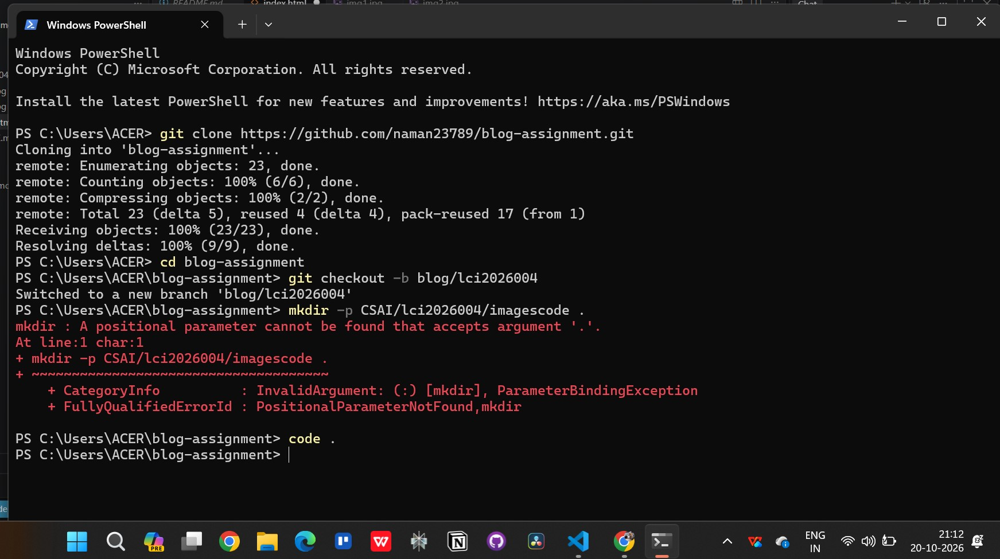
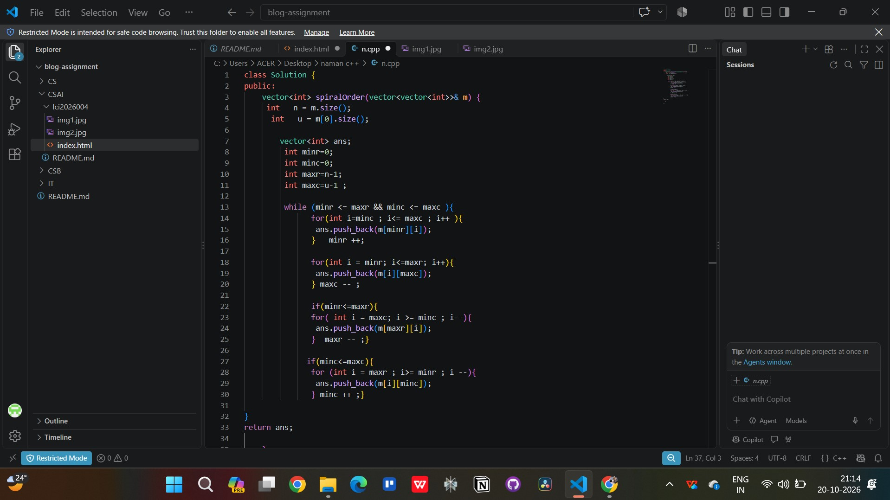

Introduction to My First Semester
When I first got into the Computer Science and Artificial Intelligence (CSAI) branch, I thought we would immediately start building smart robots or training massive AI models from day one. However, after attending my first few weeks of lectures and labs, I realized that real computer science starts with the basics. Before you can build any kind of artificial intelligence, you have to understand how a computer actually thinks, stores memory, and processes simple logic.
Living in the hostel and adjusting to college life has been a completely new experience. Between attending morning classes, finishing lab assignments, and figuring out how to use Git and GitHub for the first time, there is always something new to learn. Even simple things like using the terminal instead of clicking folders took me a little while to get used to, but now it feels much faster.

What I Am Learning Right Now
Right now, most of my time goes into building a strong foundation in core programming and database concepts. Instead of jumping straight into heavy libraries, we are focusing on writing clean logic from scratch. Whenever I get stuck on syntax or need to check how a function works, I usually look it up on CPP Reference or read tutorials on W3Schools to clear my doubts.
Main Tools and Technologies I Use
- C and C++ for learning logic, loops, arrays, and memory management
- MySQL Workbench for writing database queries and creating tables
- HTML5 for structuring basic web pages without any styling
- Git and VS Code for managing code and submitting lab work
How I Approach a Tough Coding Problem
Whenever I get a new lab assignment that looks complicated, I try not to panic and follow a basic step-by-step routine:
- Read the problem statement twice and write down the sample input and output on paper.
- Break the logic into smaller parts instead of writing the whole program at once.
- Write the basic code in VS Code and test it with simple values first.
- Fix the compiler errors one by one until the output matches what is needed.
My Weekly Study Breakdown
| Subject / Area | Main Tool Used | Current Difficulty Level |
|---|---|---|
| C / C++ Programming | VS Code & GCC Compiler | Medium |
| Database Management (DBMS) | MySQL Workbench | Easy to Medium |
| Web Development Basics | HTML & Browser | Easy |
| Version Control | Git & GitHub | Medium |
Apart from sitting at my desk and coding, I also make sure to take time out for physical training and hitting the gym. Staring at a screen for hours trying to find a missing semicolon in C++ or fixing a SQL table error can get pretty frustrating. Lifting heavy weights and staying active helps me clear my head so I can come back to my laptop with better focus.

Conclusion
Overall, starting my journey in CSAI has taught me that patience and consistency matter way more than trying to rush ahead. Writing plain HTML for this blog assignment showed me how web pages are actually structured underneath all the fancy designs we see on the internet every day. Over the next few months, my main goal is to get much faster at problem-solving in C++, master SQL queries, and slowly start exploring how math and algorithms connect to real Artificial Intelligence projects.